Grib Weather
OpenCPN has a grib weather file viewer plugin, aimed at being useful while under way.
The grib plugin is always distributed with OpenCPN, no separate download is required.
What is a grib file?
If you are not familiar with grib weather files, make sure you understand the basics, before you start to use them. It is essential to understand the limitations of weather forecasts that are distributed in the grib format.
It is also worth pointing out that gribs are not reliable near tropical systems.
Send a blank mail to GribWarning@saildocs.com. Read the mail you get back carefully.
To get started with gribs and to find sources for downloads, check Franks-Weather.
A very good, up to date book, is “Modern Marine Weather, second edition” by David Burch, with a thorough treatment of the subject.
A few files including lectures on tropical weather and gribs are available here.
Types of Grib files.
OpenCPN can read both the original gribfile format, known as Grib1, as well as the new Grib2 format, with the .grb2 or .grib2 file-extension.
Get started
To display grib files as an overlay on your normal charts you have to first activate the grib icon
Go to  find the plugin tab. Click on the Grib plugin, then the “Enable” button. The “Preferences” Button brings up a small dialog. The settings in this dialog rarely needs changing after the initial setup.
find the plugin tab. Click on the Grib plugin, then the “Enable” button. The “Preferences” Button brings up a small dialog. The settings in this dialog rarely needs changing after the initial setup.
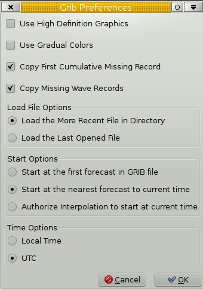
Grib Preference
Use High Definition Graphics. The setting only concerns the barbed wind arrows.Tick the “Use High Definition Graphics” box, unless you are on old hardware. Not ticking the “High Definition Graphics” box can help to speed up the grib display on a slow computer.
Use Gradual Colors. This setting applies to all colored overlay maps. On many installations the difference in rendering is very small. The overlay maps built in color variation plays a part.
Copy First Cumulative Missing Record. This is about rainfall and cloud cover records .
As these records are “cumulative” the first one does not exist in files from zyGrib and Saildocs. With this parameter unchecked, there will be neither rainfall and nor cloud cover displayed for the first date/time of the file. Ticking the box fixes the problem.
Copy Missing Wave Records. This only concerns wave records from zyGrib delivers files from two models ; FNMOC (WW3-…) for waves and GFS for all other parameters. These two forecast models does not have the same time spacing. For some dates/times, the wave data do not exist.This parameter allows this missing data to be reconstructed and avoiding the overlay (if set) to flicker.
Load File Options
Load the More Recent File in Directory. Loads the newest file in the grib directory on start.
Load the Last Open File. Loads the grib file used last time.
Start options
Start at the first forecast in GRIB file
Start at the nearest forecast to current time
Authorize interpolation to start at current time.
Time Options
Local Time
UTC
The Grib Display Controls
The Standard Display Control
To start the Grib plugin press the button in the tool-bar. The “GRIB Display Control” then pops up.
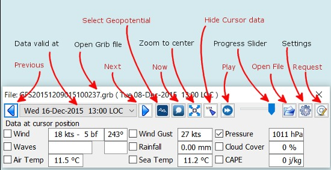
Hide Data at Cursor
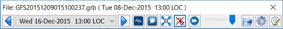
This is a smart and compact dialog. For a quick start press the “Open File” button and navigate to your grib file directory and press the file to be displayed.
Previous/Next Go to the previous or the next record in the gribfile. This corresponds to the time “interval” chosen when the grib file was downloaded.
Data valid at The time of validity for all grib data on screen.
Open Grib file The name of the grib file in use.
Now Displays the record, nearest in time to “now” according to the Start option you have selected: (“Start at the nearest forecast to current time” or “Authorize interpolation to start at current time”).
Select Geopotential Height If grib data for geopotential height is available, selection will be between Std, 500.
Zoom to Center This button will home in on the loaded area that the loaded grib file covers.
Play Goes through all records in turn, with the animation speed controlled in the “Grib Settings” dialog.
Hide Cursor Data Hides Grib which normally appears in the data windows. Data windows are hidden.
Progress Slider Just to the right of the “Play” button is a slider that is just another way of going through the grip records.
Open File Activates the operating systems standard file selector dialog to select a grib file. The plugin remembers the directory of this grib. This is used next time you start OpenCPN and activates the Grib plugin. See settings in the “Grib Preferences” dialog above.
Settings is where to control how the different grib data will be displayed. See more below.
Request Download grib files via email. More below.
GRIB Data at Cursor. This is where the “smart” part kicks in.
Only entries for the data contained in the active grib file will be displayed. For example, if there is no wave data in the current grib file, there will be no signs of wave data at all. In the case above, where the the wave data is N/A, the grib file includes wave data, but not for the area where the cursor is. Compare with the picture below, where the grib only contains current data.
The tick boxes next to each data entry, are used to activate the data-display on the screen.
Exactly what will be shown is controlled in the “Grib Settings” dialog, which is reached by pressing the “Settings” button.
Don't activate to many display features at the same time. The display quickly becomes very cluttered.
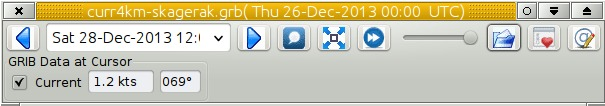
The “GRIB Display Control” loaded with a grib file only containing current data.
Advanced GRIB Data at Cursor. The display options for all the data shown, can be reached by right.clicking on the little squares where the “ticks” are shown. For the meaning of all these options, read on.
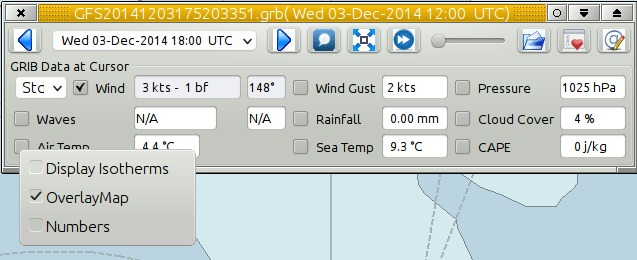
Right-clicking the “Air Temp” option square.
The Advanced Display Control
The plugin has an advanced mode were altitude data can be displayed. This mode requires some more knowledge than plain gribs.
A good start is to read "Mariner's Guide to the 500--Millibar Chart".
If a grib file includes altitude data, the control will automatically include more options. See below.
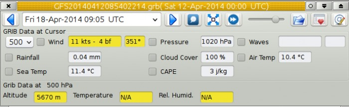
If the dialog looks normal except for an extra selection box under “GRIB Data at Cursor”, like this,
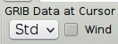
then the grib file contains altitude data. Selecting one of the altitudes, for example 500, changes the dialog to what you see above.
The advanced data are displayed against a yellow background.
Wind. These are the wind data valid for the selected altitude level.
Grib Data at 500 hPa. The values at the selected level.
Weather Tables
Once a grib file is loaded in the current session, the “Weather table” appears in the right click menu.
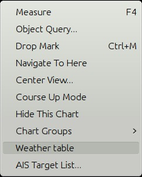
Click the entry, and a Weather Table, valid at the cursor point, pops up. All available data in the current grib file, for the whole time span, are shown.
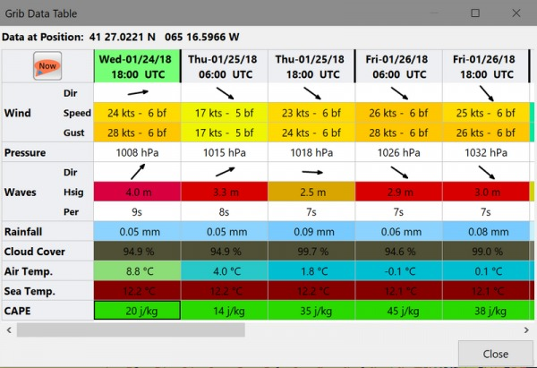
NOTE: To change the Wind & Wave Arrows to Degrees, just hit the Dir switch.
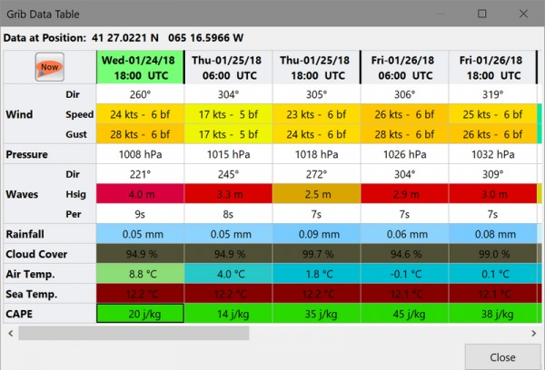
Settings
…controls how the grib files are displayed on the screen, and units used in the Grib Display control. Things like overlay colors, animation time interval and speed and much more. The basic dialog looks like this.
Typical DATA TAB
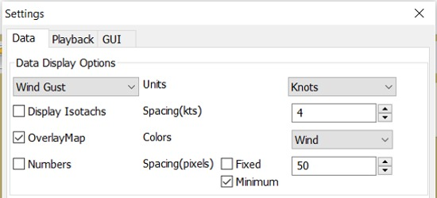
Note the Fixed or Minimum Spacing (pixels) selection. This is a typical setting.
Typical GUI TAB
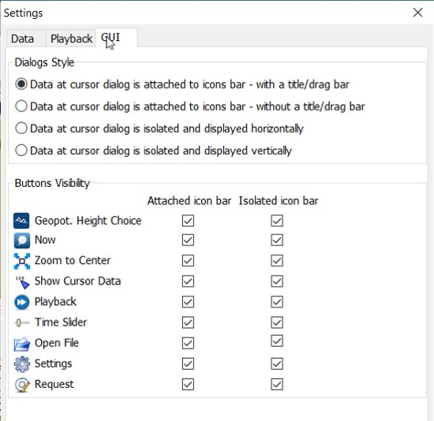
Typical PLAYBACK TAB
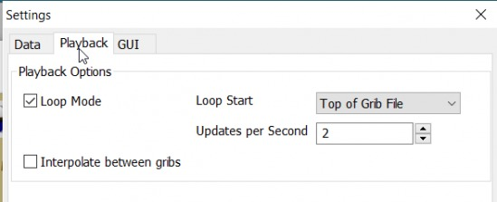
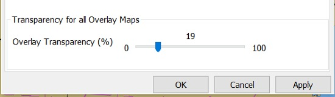
Playback
The Loop Mode controls what happens when “Play” is pressed in the Grib Display Control.
Loop Mode. Sets the “Play” function into a loop mode. Otherwise, playback will stop when reaching the end of the file.
Loop Start. Were to start the loop. The option “Current time forecast” makes sure that only data now or in the future are shown
Updates per Second. Controls the speed of “play”.
Loop Start. The loop can start either at the start of the grib file or from the current time forecast.
Interpolate between gribs. If you select this option, you will be able to choose your own time interval, but you have to consider that it can decrease data accuracy. To remind you, this info will pop up.
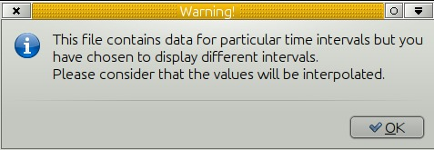
Time Interval. This is the time interval used for interpolation. The entry is only visible if “Interpolate between gribs” is ticked. This is connected tho the chosen time interval when requesting a grib file.
Display
The lower part of the Grib Settings Dialog, under the Display heading is really 10 different controls. The controls are activated by the choosing one of the items in the selection menu below.
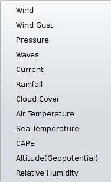
Many of the entries are repeated, so let's first have a closer look at the the most important one, the Wind. Entries on the same line are connected.
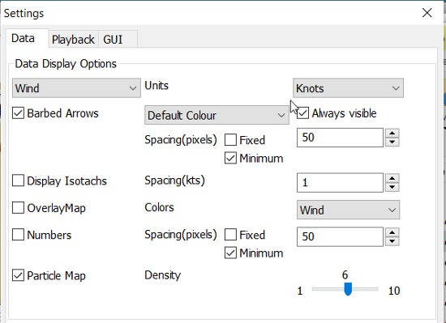
Units refers to the choice of units for the selected record.
For wind speed the choices are.

Barbed Arrows Display the traditional barbed arrows, showing wind direction and wind speed.
Range refers to the distance between displayed arrows (not working 3.3.1117).
Default Color/Controlled Colors Default is dark brown while “Controlled” varies from blue for very light winds to red for very strong winds.
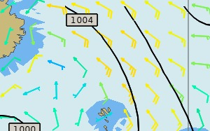
Always visible This option only exists for “Wind” and “Pressure”. When ticked the object is shown regardless of what is ticked in the “Settings Control”. The idea is to be able to Show wind and/or pressure at the same time as other options. Use with Rainfall, for example, to help identifying fronts.
Display Isotachs shows contour lines connecting points with the same wind speed.
Spacing controls which wind speed Isotachs will be shown. Use knots for units and 10 for spacing and isotach contours will be shown at 10 kts, 20kts and so on.
OverlayMap Depending on your system capability,if you use “Accelerated Graphics (OpenGL)” (see General Options/Display/Advanced), the overlay will be visible at all scales. But if you don't, the overlay will only be visible at small scales. A small yellow pop up at the bottom left of the screen will inform you. Zoom out to a scale of 1:13 millions, or smaller to see them.
Colors is another selection menu containing pre-set color schemes. The idea is to use the scheme with the same name as the control, but this is just a hint, nothing more.
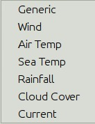
Numbers shows the wind speed in small square boxes. Minimum Spacing refers to the spacing between these boxes.
Particle Map is a kind of animation of the wind field. It is created by letting “particles”, or dots, move in the wind direction and leave a trail. The trail is colored after the wind strength, and each particle has a limited “life span”.
The Density slider creates particle trails that are shorter but closer together with increased value, which is the same as further to the right. The particle Map below clearly shows a convergence zone with stronger winds (red). This is probably a cold front.
Performance Warning: Note that high density Particle Maps on Low Powered Machines and Large Files may slow your machine to a crawl. First test on small files.
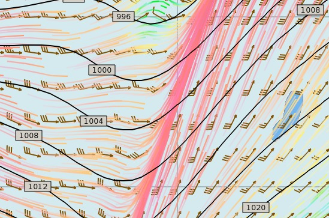
Overlay Transparency works as expected.
All the controls for Wind Gust, Rainfall and Cloud Cover, have similar entries; only the units differ.
The pressure display has no overlays, only the options of isobars and numbers. Overlay Transparency is redundant.
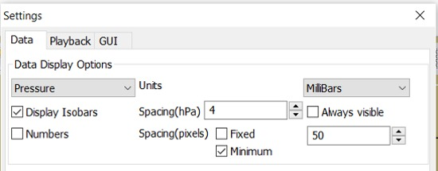
Waves and Current have a more or less similar display. A Particle Map is available for currents. See the descripion above for wind Particle Maps. Once again different units.
There is a choice between three different display arrows shown in two sizes.
If wave height, direction and wave period is present in the grib file it will be displayed in the Display Control like this:

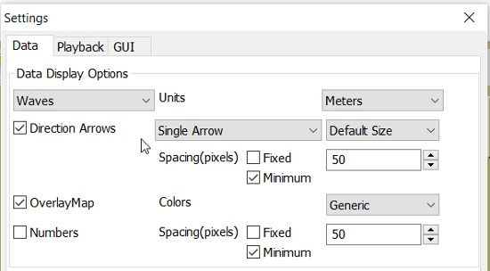
Air Temperature and Sea Temperature looks the same.
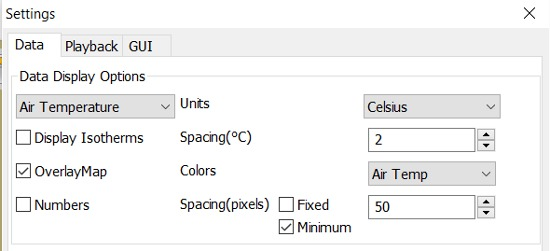
Convective Available Potential Energy (CAPE) has these settings
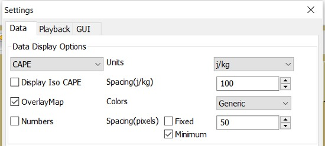
Altitude and Relative Humidity have a simple one choice entry.
The Grib-file Request Button
- Grib files can be requested directly from the plugin. The request is in the form of an email to SailDocs or ZyGrib. The requested grib file is also delivered via email as an attachment.
- The area for which data is requested defaults to the area visible on the screen, but the request area can be selected by other means as well. See more below.
- It's possible to request gribs from 4 different Grib prediction models when using Saildocs GFS, COAMPS, RTOFS and indirectly WW3. When you request “Waves” in GFS, Saildocs merge wavedata from WW3 into the delivered grib.
- The ZyGrib option can only deliver GFS gribs, which is the “standard” model for gribs.
- RTOFS gribs only contains current and water temperature data.
- COAMPS delivers wind and pressure with a higher resolution than GFS
- The minimum times between grib records are 3h for GFS and 6h for COAMPS & RTOFS.
- GFS can be requested for 8 days ahead. An extended GFS request up to 16 days ahead is possible. This warning will pop up.
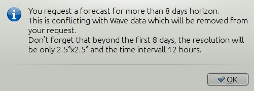
The same value for COAMPS is 3 days and RTOFS 6 days.
There are two layouts of this dialog, depending on whether it is a request to SaiDocs or to ZyGrib. Some alternatives are only available from SailDocs, and some are only available from zyGrib. Alternatives not available are grayed out.
SailDocs Request Form
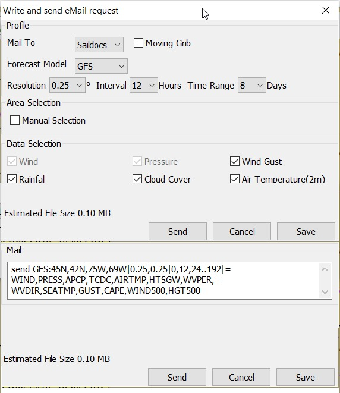
Compose the request by picking parameters and data. Not all data are available for all choices of parameters.
For example, in the picture above “Wind Gusts” and “Current” are grayed out, as the are not available with GFS from SailDocs.
When selecting “Moving Grib” the dialog expands and makes it possible to choose a speed and course. The selected grib forecast area will move, using these values, for each grib interval. The idea behind this is to minimize the download while still covering a longer passage.
Moving grib files are incompatible with interpolation, so if a “moving file” is detected a warning is displayed. Interpolation, if set is deactivated, but only for moving file, the settings as such, are not modified.
Resolution The choices are 0.5, 1.0 or 2.0. A recent upgrade to gribs makes it possible to download even 0.25° resolution. This is not yet an alternative in the plugin and requires editing the email manually before sending. In the picture above …|0.5,0.5|… should instead look like …|0.25,0.25|…
The default geographical coverage of the requested grib file is the area you can see on the screen. A manual Selection Mode is also available.
When the Area Selection → Manual Selection box is ticked the dialog expands
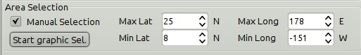
Choose the limiting Latitude and Longitude for the grib-file manually or press “Start graphic Sel.” button.
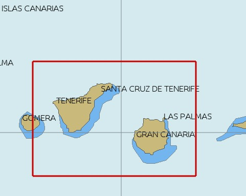
Press the left mouse-button and draw a rectangle around the required area.
When selecting “Pressure Altitude” and the GFS forecast model, the dialog expands and makes it possible to choose forecasts for different altitude levels. The SailDocs dialog only supports the 500 mb altitude, while zyGrib suports all options.
When you are ready press “Send”.
This message will show in the “Mail” window instead of the “send” request:
Your request is ready. An email is prepared in your email environment. You have just to verify and send it... Save or Cancel to finish...or Continue...
As stated, a mail is composed for you and ready to send with your normal mailing program.
This is the standard way of getting a new grib in Windows and Linux. (Mac ??)
To get a grib, just press “Send”, and wait for a return mail.
zyGrib Request Form
Note that the Login is longer the first page of the website. The URL for the login is http://www.zygrib.org/index.php?page=gribauto This is where you login to recieve the special code that allows download for two months.

Configuration of Default Email Server
If after hitting “Send”, the “Mail” window shows this message, instead of the “send” request:
Request can't be sent. Please verify your email system parameters. You should also have a look at your log file. Save or Cancel to finish...
Configuration of the user's default Mail Server for the particular Operating System is required.
There is an advanced alternative for Mac OSX, Linux (and BSD). Install and configure a mail server. Instructions are on the Grib Weather Mail Servers Page. Following these instructions to enable the mail server will enable automatic transmission of a grib request to SailDocs.
After installing and configuring a mail server, there is one more step. Open “opencpn.conf” and add the line below. As always, do not run OpenCPN when editing opencpn.conf.
[PlugIns/GRIB]\\ SendMailMethod=1
Setting “SendMailMethod” to “0” restores the default.
ZyGrib Server Registration
When ZyGrib is selected as the download server, there are User and Code fields that can be completed. This requires subscription or registration to the ZyGrib Forum.
ZyGrib allows registration to the zyGrib forum and permits use of the user/password to obtain a two month code for registered zyGrib downloads. Limitations: Maximum 16 emails per user and per 24 hours. Maximum size of 4 MB per grib file.
Load two Grib Files Concurrently (Wind + Current)
Combine separate Saildocs GFS Wind + RTOFS Current grib files.
(Note: Only applies to OpenCPN v4.2.x and forward)
Using Windows, Click on the “Open a File” to browse grib file.
- Highlight two grib files (Ctrl and pick the two files with a mouse left click.)
- The pick Open and the two grib files will be opened.
- Both grib files will be used by Weather_routing.
- In grib_pi settings I always use the “Current” “Proportional Arrow”
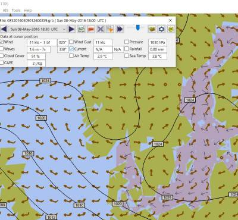
More to know
There are many aspects to the use of grib files which lead to the use of other companion programs or plugins.
- ZyGrib is a free and open-source software (FOSS) dedicated grib viewer. Grib files can be downloaded by ZyGrib and then opened in OpenCPN.
- QtVlm, is another FOSS weather routing program, combines a grib file with boat polar data, and produces an optimized route.
These are very good tools to use in routing decisions, but they all have the same limitations as all grib-data.
Grib File Notes & WARNINGS
(These notes are from the SailDocs Grib Server)
This grib file is extracted from a computer forecast model. While such computer data can provide useful guidance for general wind flow, there are limitations which must be understood.
What you are receiving is a weather prediction generated by a computer run by NOAA/NCEP (GFS, WW3 models) or the US Navy (comaps, nogaps) and downloaded and processed by Saildocs (a service of Sailmail).
The network is complex, and any computer network is subject to hardware and software failures or human error which can effect accuracy or availability of data.
- In particular, if our servers were not able to download a current data file then the grib-file may be based on old data. The file information is shown above and also contained in the file itself. Also remember that grib data is not reviewed by forecasters before being made available.
- You are getting a small part of the raw model data that the forecasters themselves use when writing a forecast, and it is your responsibility to make sure that the data is consistent with your local conditions and with the professionally-generated forecasts (e.g. text bulletins and weather-fax charts).
- Grib data also has limitations along shore, where local effects often dominate and may not be adequately modeled.
- In addition these models cannot provide adequate prediction for
- tropical systems,
- frontal activity or convergence zones.
- For example, while global models can provide useful data on the likely track of hurricanes, they grossly underestimate the strength of hurricanes because of their small size compared to the model grid.
- For hurricane/cyclone forecasts, carefully monitor the appropriate warning messages and do not rely on grib data from any source.
Grib data can provide useful guidance not available elsewhere. Understand the limitations and use the data carefully. Grib data should be considered supplemental to other forecasts, and not be relied upon in lieu of professionally-generated charts or forecasts.